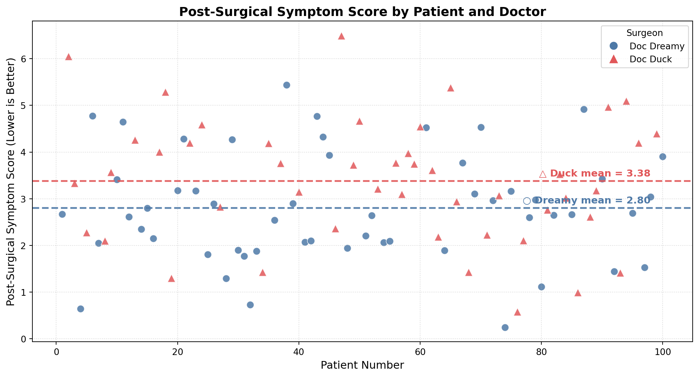
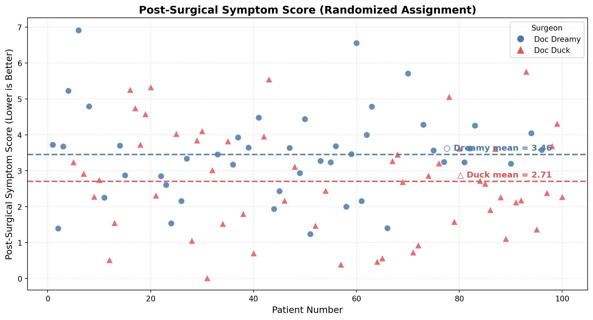
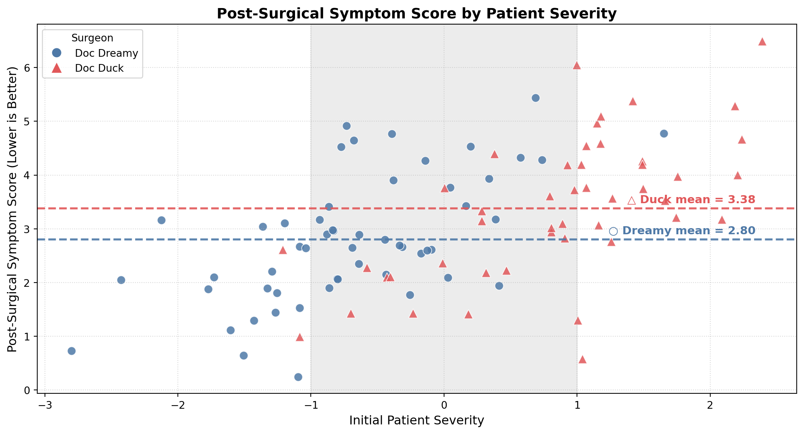

Using Randomization & Stratification to Overcome a Common Cause Confounder
Visualizing Confounding and Causal Inference in Surgical Outcomes
The Paradox: Who Really Is the Better Surgeon?
TipA Tale of Two Surgeons
Paraphrased from (Taleb 2017)

Imagine you need to choose between two surgeons of similar rank at the same hospital. The first surgeon, Doc Dreamy, matches our stereotype perfectly: refined appearance, silver-rimmed glasses, delicate hands, measured speech, and an office adorned with Ivy League diplomas. The second surgeon, Doc Duck, by contrast, looks more like a butcher—overweight, with large hands, an unkempt appearance, and no visible credentials on the wall.
Counterintuitively, the surgeon who does not “look the part” may actually be the better choice. Why? Because when someone succeeds in their profession despite not fitting the expected appearance, it suggests they had to overcome significant perceptual biases. And if we are lucky enough to have people who do not look the part, it is thanks to the presence of some skin in the game, the contact with reality that filters out incompetence. (Taleb 2017)
Observational Data: A Misleading Victory for Doc Dreamy
The observational data initially appears to favor Doc Dreamy. Doc Duck’s average post-surgical symptom score is 3.38 while Doc Dreamy’s average is 2.80. Since lower scores indicate better outcomes, the naive conclusion would be that Doc Dreamy performs better. A two-sample t-test reinforces that impression with a statistically significant difference (\(t = -2.317\), \(p = 0.023\)). Figure 1 shows the full picture for all 100 patients.
At first glance, the figure seems persuasive: Doc Dreamy’s patients cluster lower overall, and his mean line sits below Doc Duck’s. But this visual comparison still leaves open a crucial causal question. Are we really seeing a treatment effect, or are we seeing differences in the types of patients each surgeon treats?


Solution 1: Randomization — Breaking the Confounding Path
The gold standard for establishing causation is a randomized controlled trial. Instead of allowing patients to choose their surgeon, we randomly assign them to Dr. Dreamy or Dr. Duck.
This is exactly the type of problem randomization solves. By assigning patients randomly, we break the pathway through which patient severity influences surgeon choice. Once assignment is random, severity is no longer systematically related to which doctor a patient sees. That means the observed differences in outcomes can be interpreted much more credibly as causal.

In Figure 4, patient severity (\(Z\)) no longer causes surgeon choice (\(X\)). Instead, randomization (\(R\)) determines surgeon assignment. This removes the confounding relationship and lets us evaluate whether the surgeons themselves differ in effectiveness.
Why Do We Need a Randomized Dataset?
We cannot observe what did not happen. Each patient in the observational dataset experienced only one surgeon, not both. This is the fundamental problem of causal inference: we see one realized world, not the parallel world in which everything else stayed fixed but the treatment changed.
Because we cannot rerun history, we conduct a randomized experiment and observe a new sample of patients.
Under randomized assignment, the pattern reverses. Doc Duck’s average post-surgical symptom score is 2.71 while Doc Dreamy’s average is 3.46. Since lower scores indicate better outcomes, Doc Duck now appears superior. A two-sample t-test again finds a statistically significant difference (\(t = 2.734\), \(p = 0.007\)). Once confounding is removed, the better-performing surgeon is no longer Doc Dreamy—it is Doc Duck. Figure 5 shows this clearly.

The randomized figure is powerful because it isolates the causal comparison. The same two doctors are now judged under a design where patient severity does not systematically determine assignment. Once that confounding path is removed, the true performance difference becomes visible.
Solution 2: Stratification — When Randomization Is Not Available
Randomization is ideal, but it is not always feasible. In many real-world settings, we cannot randomly assign treatment. In those cases, a useful alternative is stratification: comparing outcomes within groups that share similar values of the confounder.
Here, that means comparing Doc Dreamy and Doc Duck among patients with similar initial severity. Rather than plotting patient number on the x-axis, it is more informative to plot initial severity directly and examine whether one surgeon tends to perform better within overlapping severity ranges.

The value of stratification is most visible in the highlighted region between severity scores of -1 and 1. This range contains substantial overlap between the two surgeons, making it the most informative part of the figure for comparison. Outside that range, the assignment imbalance is stronger: Doc Duck sees more of the high-severity patients, while Doc Dreamy sees more of the low-severity patients.
Within the overlapping region, Doc Dreamy’s blue circles tend to lie higher than Doc Duck’s red triangles, indicating worse outcomes for comparable patients. At the same time, Doc Duck’s points are generally farther to the right on the x-axis, showing that he disproportionately treats the more severe cases. This is exactly the visual pattern we would expect if patient severity were influencing both surgeon choice and post-surgical outcomes.
Interpretation and Takeaway
This example shows how easily raw averages can mislead. If we look only at the observational comparison, Doc Dreamy appears better because his mean symptom score is lower. But that comparison is confounded by patient severity. Doc Dreamy is receiving easier cases, while Doc Duck is receiving harder ones.
Randomization fixes the problem by breaking the relationship between severity and treatment assignment. Once that happens, the causal comparison becomes much clearer, and Doc Duck emerges as the better surgeon. Stratification reaches the same conclusion more indirectly by comparing the surgeons within similar severity ranges.
The central lesson is simple: correlation alone is not enough for causal interpretation. When a common cause affects both treatment and outcome, apparent performance differences may reflect selection effects rather than true treatment effects. Randomization is the strongest defense when it is possible. When it is not, stratification provides a practical and informative alternative.
References
Taleb, Nassim Nicholas. 2017. “Surgeons Should Not Look Like Surgeons.” https://medium.com/incerto/surgeons-should-notlook-like-surgeons-23b0e2cf6d52.